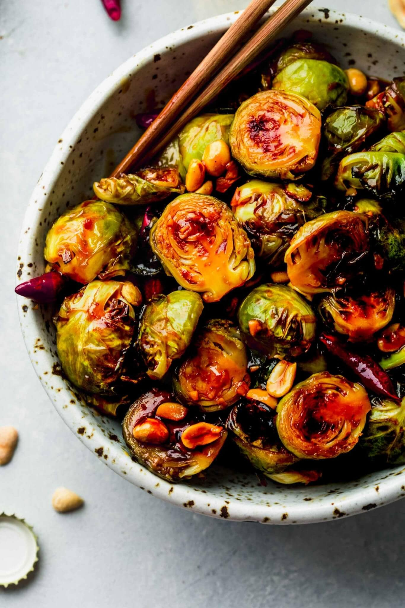

Kung Pao Brussel Sprouts

If you've spent your life despising the humble brussel sprout, this
recipe may just make you a believer. Roasted brussel sprouts with a bold
kung pao sauce.
Ingredients
- 1 lb Brussel Sprouts, trimmed and halved
- 1 Tbsp olive oil
- 2 Tbsp chili garlic sauce
- 1.5 Tbsp maple syrup
- 3 Tbsp soy sauce
- 2 tsp cornstarch
- 1/2 Tbsp + 2 tsp sesame oil, separated
- 1/2 Tbsp fresh grated ginger
- 2 tsp rice vinegar
- 1 Tbsp water
- 1 bundle green onions, slice on the bias(diagonal)
- 1/4 roasted peanuts
- Cooked rice, optional
Steps
- Preheat oven to 400F. Cut the hard ends off the Brussels sprouts and slice them in half lengthwise. If you have any exceptionally large sprouts, quarter them. Transfer the sprouts to a baking sheet lined with parchment paper. Drizzle with olive oil and toss to evenly coat. Roast for 20 – 25 minutes, flipping the sprouts halfway through to ensure even browning. When done, the Brussels sprouts should be tender and caramelized on the edges.
- Meanwhile, make your sauce. Combine the chili garlic sauce, maple syrup, soy sauce, cornstarch, 2 teaspoons of sesame oil, ginger, rice vinegar and water in a mixing bowl. Whisk to thoroughly combine. Set sauce aside.
- Add ½ tablespoon of sesame oil to a large, deep skillet and heat over medium-high. Once hot, add the green onion and sauté until bright green and slightly wilted, about 2 minutes. Remove the Brussels sprouts from the oven and add them to the skillet. Toss with the green onion and sauté for a minute more. Then pour in the sauce. Continue to cook for 2 – 3 minutes, until the sauce has thickened and the sprouts are coated. Remove from heat and stir in the peanuts.
- Serve Brussels sprouts as a side dish or scoop over rice for a heartier meal.